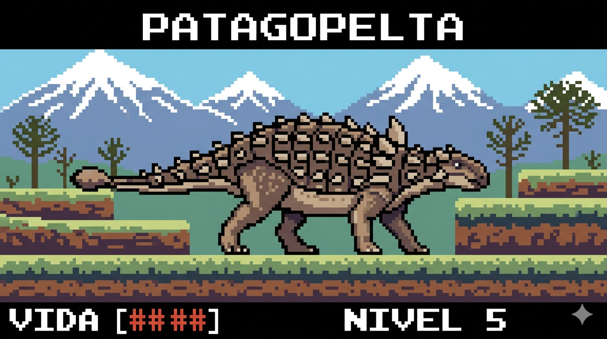
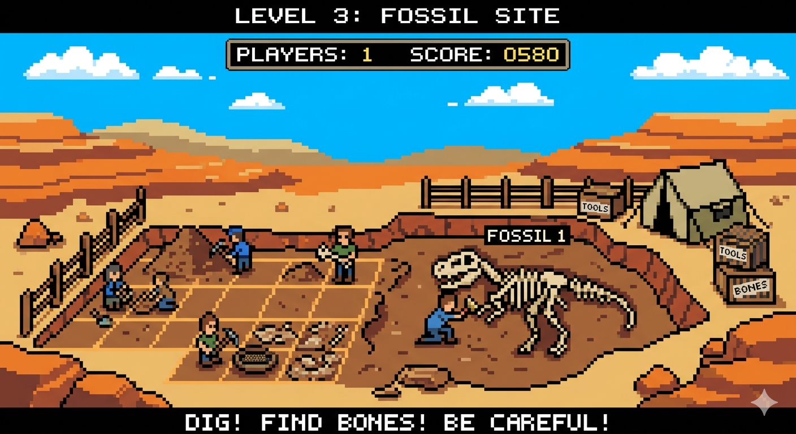
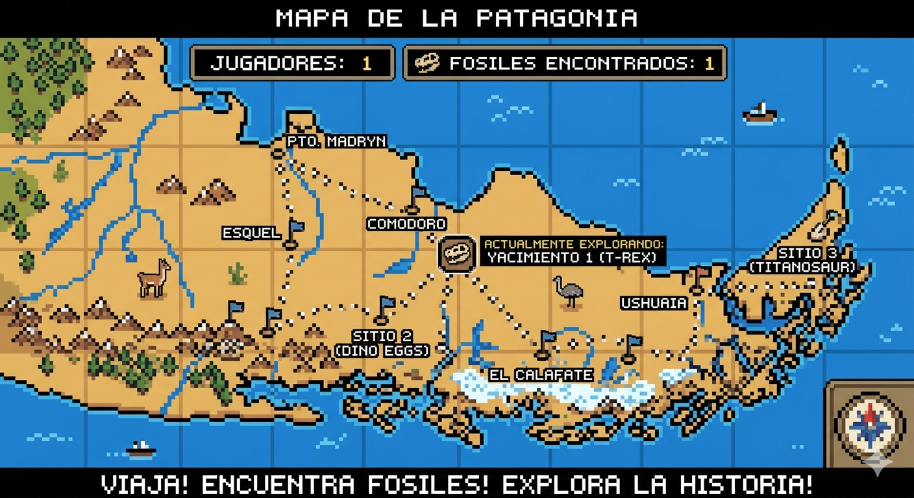

En Titanes del Sur, no nos conformamos con mirar piedras viejas. Somos una ONG dedicada a la protección, estudio y difusión del patrimonio paleontológico de Argentina, con un enfoque que rompe con el molde tradicional del "museo aburrido".
Nuestros enfoques principales son:
- Custodia de Gigantes: Trabajamos activamente en la preservación de los yacimientos fósiles frente al avance de la urbanización descontrolada y el vandalismo.
- Eco-Paleontología: Entendemos que no hay fósiles sin territorio. Por eso, nuestra misión includes la preservación del medioambiente actual.
- Educación con Volumen: Queremos bajar la paleontología de la estantería de cristal. Usamos la tecnología y el diseño para atraer a las nuevas generaciones.
¿Por qué hacemos esto? Porque somos una generación que entiende que el pasado nos da contexto, pero el futuro lo construimos nosotros. Vinimos a demostrar que la ciencia puede tener mucha onda.
Nuestros Gigantes en Acción

Patagopelta
Un pequeño dinosaurio acorazado que habitó la Patagonia Argentina hace unos 70 millones de años.
Conocer más
Proyecto Excavación 2026
Las próximas campañas de excavación y prospección en Argentina se centran en el rescate de megafauna pampeana y el estudio de dinosaurios triásicos y cretácicos.
Conocer más
Salvemos el Yacimiento
Los yacimientos paleontológicos enfrentan un riesgo crítico global debido al saqueo y contrabando de fósiles, el impacto de la erosión ambiental y la expansión urbana descontrolada.
Conocer más